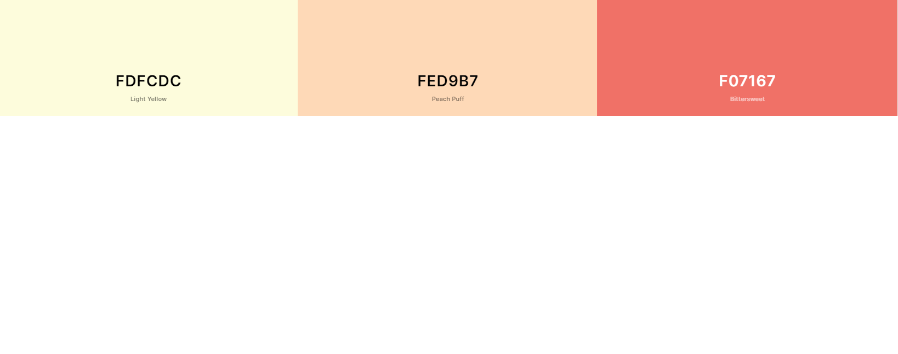

Reference color
I chose these warm colors for my weather website. I think they make a good combination together. I got these colors from the Website "coolors.co". I like this website; you can find or create your own palette of color. It has a lot of color combination samples for your website.
